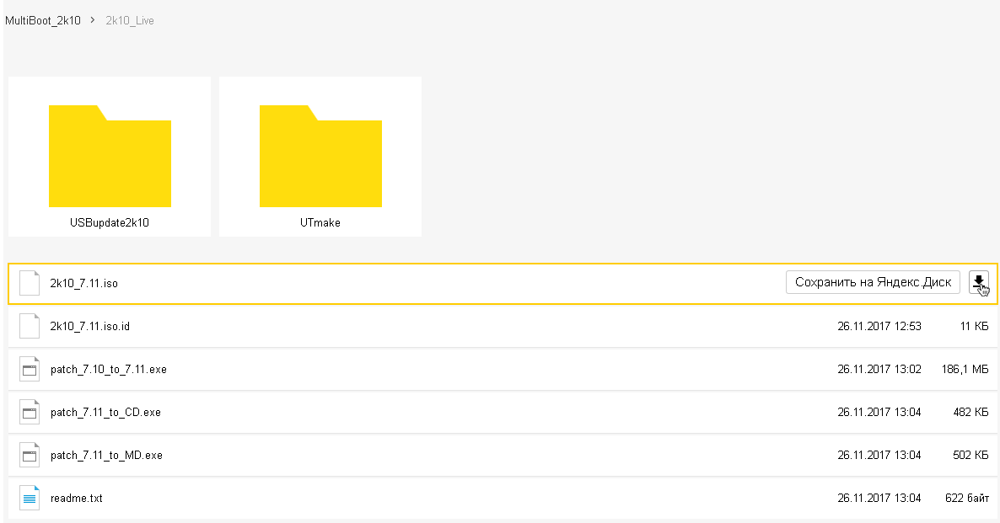
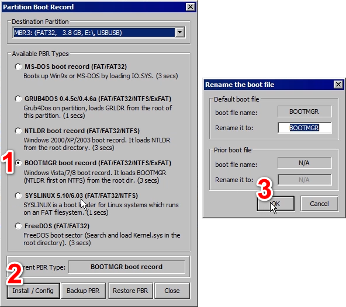

Как сделать загрузочную флешку
cats: Linux, Windows, Прочее, Сисадминство, Устранение неполадок
tags: linux, windows, видео, Программы, сбой, Советы
2017-12-30 16-12 bootable-thumbdrive-creation
Однажды включив компьютер, вы обнаружите что он не загружается. Айтишнику это не страшно, он знает что делать. А что делать обычным пользователям? Они зовут друга «программиста», а если таких нет, то компьютерного мастера, который «живёт рядом». Приезд такого мастера обойдётся от 3000р, но стоит им понять, что человек не разбирается в компьютерах, эта цена может увеличиться в разы.
Этого легко избежать, имея сисадминскую загрузочную USB флешку. Ведь с её помощью даже ничего не понимающий в компьютерах человек, сможет переустановить систему. Достаточно лишь базовых навыков в работе с ПК.
В этой статье будет рассмотрен самый простой способ создания универсального загрузочного носителя. Полученная загрузочная флешка или жёсткий диск будет совместима как с BIOS, так и с UEFI. С неё впоследствии можно будет установить любую версию Windows, восстановить существующую систему или вытащить данные с компьютера который не загружается.
Процесс создания универсальной сисадминской флешки будет поделён на 3 этапа:
- Качаем образ, и все необходимые программы: Bootice и 7-zip (в Windows 8 и выше или если есть какой-нибудь эмулятор CD, можно просто смонтировать iso, не распаковывая его)
- С помощью Bootice записываем загрузочный сектор на флешку. Флешка должна быть с Файловой Системой FAT32 (если это не так, то ФС нужно поменять на FAT32. Это можно сделать прямо из программы Bootice.)
- Распаковываем или монтируем скачанный iso образ и копируем его содержимое на флешку
Все программы которые упоминаются в этой статье нужно запускать с правами администратора. Возможно на время работы нужно будет выключить антивирус, так как он может не дать записать загрузочный сектор на флешку и сильно замедлит распаковку ISO образа и копирование файлов.
1. Скачивание образа
Загрузочных образов на основе Windows существует огромное количество. Их использование отличается лишь тем с каких сайтов их скачивать. Мой любимый на данный момент Multiboot 2k10. К сожалению официальная страница этого образа находится на заблокированном в России торренте. Но автор данного образа регулярно выкладывает свежие версии на Яндекс диск, чем мы и воспользуемся чтобы скачать его. Переходим по этой ссылке, заходим в папку 2k10_Live и качаем 2k10_7.11.iso. Возможно на момент прочтения этой статьи вместо 7.11 будет более новая версия.

2. Запись загрузочного сектора на флешку
Пока образ качается, загружаем программу Bootice. С её помощью мы пропишем загрузочный сектор на нашу флешку. Это можно сделать и с помощью встроенного в Windows средства bootsect, однако такая флешка будет работать не на всех материнских платах. У меня одна такая плата есть, поэтому мы используем Bootice, как наиболее универсальное средство.
Родной сайт этой программы ipauly.com – на китайском, причём на главной странице не последняя версия. Поэтому для удобства я выложил Bootice на своём сайте:  32 битная версия 64 битная версия.
32 битная версия 64 битная версия.
В принципе можно её и не качать, а вытащить из образа, когда он скачается.
Официальная страница сборки (ipv6 версия)
Работать с Bootice очень просто. После запуска нам понадобятся только 2 кнопки.
Если флешка не в FAT32, её нужно переформатировать в FAT32. Проверить это можно в свойствах флешки в в окне Этот Компьютер:
в данном случае всё в порядке
Нажимаем Process MBR, затем кнопки в порядке, как показано на рисунке ниже:
После этого нажимаем Process PBR и кнопки в указанной последовательности:

3. Копирование файлов на флешку
Если флешка маленькая, как в моём случае, то после распаковки можно удалить некоторые файлы из этого образа. Я предлагаю удалить драйвера для видеокарт и антивирусы:
2k10\DriverPacks\Drivers\NT6x64\Video_*
2k10\DriverPacks\Drivers\NT6x32\Video_*
2k10\DriverPacks\Drivers\NT5x32\Video_*
2k10\Programs-2k10\AntiVir\KasperskyVRT
2k10\Programs-2k10\AntiVir\DrWeb
2k10\Programs-2k10\AntiVir\DrCureIt
После этого на 4 Гб флешку всё прекрасно влезает. Если флешка больше, но можно ничего не удалять.
Осталось лишь скопировать папки 2k10, efi и файл BOOTMGR на флешку и загрузочная флешка готова.
Видеоинструкция: как создать загрузочную USB флешку:
{kind=link}
{kind=link}
{kind=link}
{kind=link}